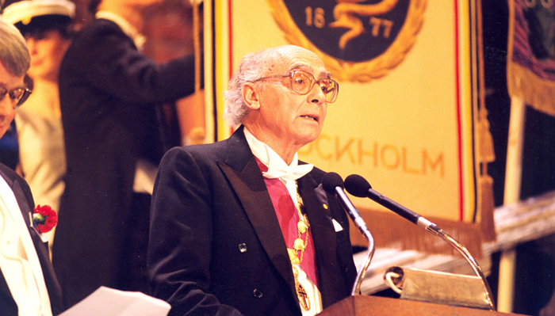

José Saramago
O primeiro escritor português a ganhar o Prémio Nobel da Literatura

Saramago a discursar após receber o prémio
Cronologia da vida de Saramago:
- 16 Novembro de 1922 - Nasce José de Sousa Saramago, na Azinhaga, Golegã, filho de José de Sousa e Maria da Piedade.
- 1924 - Família muda-se para Lisboa, em busca de melhores rendimentos. Pai trabalha como polícia. Nesse mesmo ano morre o irmão dois anos mais velho, Francisco.
- 1936 - Saramago é bom aluno e elogiado por professores e colegas (chega a ser eleito tesoureiro da Associação de Estuudantes com apenas 12 anos) mas os pais, por dificuldades económicas, são obrigados a inscrevê-lo na escola técnica. O escritor aprende a ser mecânico.
- 1941 - Começa a trabalhar como serralheiro mecânico.
- 1943 - Consegue arranjar emprego como funcionário público, na Caixa de Previdência da Companhia Indústrias Metálicas Previdente.
- 1944 - Casa-se com Ilda Reis, então dactilógrafa na CP.
- 1947 - Ano de dois acontecimentos marcantes: nasce a filha, Violante, e publica o primeiro livro, Terra do Pecado.
- 1949 - Fica desempregado 'por razões políticas', como escreve na sua autobiografia publicada no site oficial do Prémio Nobel. Volta a trabalhar como serralheiro mecânico, na oficina de um ex-professor.
- 1950 - Arranja emprego na editora Estúdios Cor.
- 1955 - Começa a fazer traduções, como forma de aumentar os rendimentos. Traduz autores como Tolstoi, Baudelaire ou Hegel.
- 1966 - Publica o segundo livro, Os Poemas Possíveis, a primeira obra de poesia.
- 1967 - Inicia mais uma actividade paralela: crítico literário.
- 1970 - Edita Provavelmente Alegria, o segundo livro de poesia. Neste ano, divorcia-se de Ilda Reis e inicia uma relação (que duraria até 1986) com a escritora Isabel da Nóbrega.
- 1971 - Ingressa na redacção do Diário de Lisboa, onde chega a editor. Neste mesmo ano publica Deste Mundo e do Outro, o primeiro livro de crónicas, que em 1973 seria seguido de A Bagagem do Viajante, o segundo do género.
- 1974 - Edita em As Opiniões que o DL Teve, que reúne as crónicas que escreveu para o Diário de Lisboa.
- Abril de 1975 - Assume o cargo de director-adjundo do Diário de Notícias. Acusado de proceder a saneamentos dentro da redacção, durante o 'verão quente', acaba por ser despedido após o golpe falhado do 25 de Novembro. Neste mesmo ano publica o terceiro livro de poesia, O Ano de 1993.
- 1976 - Desempregado, Saramago decide dedicar-se em pleno à produção literária. Muda-se para o Lavre, Montemor-o-Novo (Alentejo), onde prepara o que virá a ser o romance Levantado do Chão.
- 1977 - Publica Manual de Pintura e Caligrafia e o livro de crónicas Os Apontamentos.
- 1978 - Edita a colecção de contos Objecto Quase.
- 1979 - Publica as peças de teatro Que farei com este Livro? e A Noite.
- 1980 - Sai Levantado do Chão, a obra que marca o início do "estilo Saramago".
- 1981 - Publica o livro de viagens Viagem a Portugal.
- 1982 - Publica Memorial do Convento.
- 1984 - Edita O Ano da Morte de Ricardo Reis.
- 1986 - Publica A Jangada de Pedra. Neste mesmo ano conhece a jornalista espanhola Pilar del Rio, com quem virá a casar-se em 1988.
- 1987 - Escreve a peça de teatro A Segunda Vida de Francisco de Assis.
- 1989 - Edita História do Cerco de Lisboa.
- 1991 - Publica O Evangelho Segundo Jesus Cristo, o livro cuja polémica atinge o auge quando Sousa Lara, sub-secretário de Estado adjunto da Cultura do Governo de Cavaco Silva, o veta para o prémio literário europeu, com o argumento de que a obra é ofensiva para os católicos. Na sequência deste caso, Saramago muda-se com a mulher para Lanzarote, ilha das Canárias, onde morará até morrer.
- 1990 - Ano da estreia, em Munique, Alemanha, da ópera Baltazar e Blimunda, da autoria do compositor italiano Azio Corghi, adaptada do livro Memorial do Convento.
- 1992 - Saramago torna-se um dos fundadores da Frente Nacional para a Defesa da Cultura (FNDC).
- 1993 - Começa a escrever os diários Cadernos de Lanzarote, que virão a ter cinco volumes.
- 1995 - Recebe o Prémio Camões. Neste mesmo ano publica Ensaio Sobre a Cegueira.
- 1997 - Edita Todos os Nomes.
- 1998 - É galardoado com o Prémio Nobel da Literatura.
- 2000 - Publica A Caverna e, no ano seguinte, escreve o seu único livro infantill, A Maior Flor do Mundo.
- 2002 - Edita O Homem Duplicado.
- 2004 - Publica Ensaio Sobre a Lucidez e, no ano seguinte, As Intermitências da Morte.
- 2006 - Edita As Pequenas Memórias.
- 2008 - Estreia a 13 de Novembro o filme Blidness, do brasileiro Fernando Meirelles, adaptado de Ensaio Sobre a Cegueira. Neste ano Saramago ainda publica A Viagem do Elefante.
- 2009 - Publica Caim e gera polémica, afirmando em várias entrevistas que "a Bíblia é um manual de maus costumes".
- 18 de Junho 2010 - Saramago morre em sua casa, em Lanzarote, aos 87 anos.